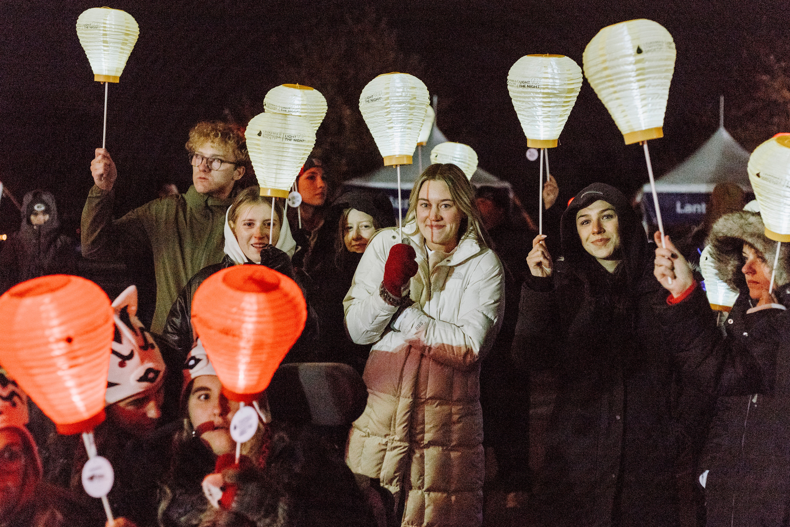

Hannah's Volunteer Experience

Students of the Year Campaign!
During my junior year of high school, I participated in the Students of the Year campaign with the Leukemia Lymphoma Society. It was a 7-week fundraising competition where I competed against other high school students to see who could raise the most money. At the end of the 7-weeks and after the final event, I won the competition and raised $55,000. I was also given the title, “Student of the Year”. Through the Students of the Year campaign, I learned a lot about myself. I was able to discover my strengths in networking, organizing, and planning. More importantly, I found a passion for volunteering with nonprofits. Students of the Year truly helped me figure out my goals for college and the rest of my future. To read more about this experience, click below.
Read Here!
Other Volunteer Experiences
- Committee Co-chair and Volunteer | Leukemia & Lymphoma Society
- Organized 10 in-person events managing the logistics, marketing and community engagement raising $10,000.
- Created a donor database of 200 individuals and tiered communication timelines and plans resulting in $35,000 raised through personal asks.
- Network with multiple businesses to gain their support during campaigns.
- Volunteer | A Moment of Magic
- Visit terminally ill children dressed up as a character to foster imagination, friendship and hope.
- Fundraised $640 for the organization to provide children with a life-changing experience.
- Attend and participate in monthly meetings to brainstorm more ways to impact the community.